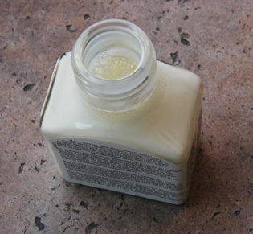

Les
réserves
|
Il s'agit d'un procédé finalement très important,
utilisé dans plusieurs domaines des arts plastiques et des disciplines voisines (peinture, modelage,
graphisme, gravure, infographie, émail au champlevé, etc.).
Il n'est guère éloigné du pochoir.
LE PRINCIPE : Il s'agit de protéger, d'isoler temporairement une partie d'un support ou une couche
peinte (ou imprimée, gravée, émaillée, etc.) des altérations causées par l'application
ultérieure de peinture ou d'un autre produit (voir eau-forte).
|
Sommaire
Exemple
type
Réserves
diverses
Problème
du retrait des réserves
Problème des réserves de grande dimension |
Exemple type
Voici un exemple classique, facile à
transposer à d'autres techniques.

La plupart des aquarellistes évitent d'employer la
peinture blanche. Ils se servent de la blancheur du papier et de la transparence
de l'aquarelle.
Or, ils aiment aussi imbiber leurs tableaux d'une
peinture particulièrement dilué, très liquide (c'est dans la vocation de l'aquarelle).
Comment faire pour conserver intacte la blancheur du
papier dans les espaces destinés à rester blancs lorsque l'on souhaite
couvrir de larges zones avec un gros pinceau ?
*
Les peintres appliquent avec un pinceau
légèrement enduit de savon (protecteur), un produit nommé usuellement gomme
à masquer, gomme liquide ou drawing gum (image ci-dessus) sur les emplacements à garder blancs ou
intacts. Il s'agit d'une sorte de latex.
Le pinceau doit être lavé immédiatement après l'application car ce type
de produits est très visqueux et alcalin.
* Une fois le produit sec, les
"réserves" ne seront pas entachées par les couches ajoutées.
Une bonne gomme à masquer doit être assez voyante afin que l'aquarelliste
visualise d'un coup d'oeil l'emplacement des réserves.
* En fin de travail, la drawing gum est retirée
avec une gomme normale - ou mieux : une gomme
crêpe -, découvrant les blancs intacts.
Le principe du masquage peut être utilisé pour protéger des espaces blancs
ou des zones
déjà peintes à conserver intactes. Rien n'interdit non plus de recouvrir les zones réservées
après élimination de la gomme. Ces deux possibilités garantissent à la
technique du masquage une souplesse d'emploi qui lui fait conserver son succès
et son actualité. Les
réserves à la cire (paraffine)
ainsi que quelques autres posent par contre de tels
problèmes de mise en oeuvre qu'elles sont aujourd'hui devenues des procédés
marginaux.
Un défaut de la gomme à masquer est qu'elle est fortement alcaline
(présence d'ammoniaque accompagnant le
latex) et malgré le
savon dont en enduit les pinceaux, ceux-ci peuvent être abîmés. Il est donc
conseillé de ne pas employer de pinceaux fragiles et coûteux pour cette
opération.
Réserves
diverses
On utilise parfois des liquides huileux qui imbibent les supports : la vaseline,
des huiles diverses, des graisses. Leur fluidité ne va pas sans poser quelques
problèmes, tout comme leur retrait, à l'instar des réserves à la cire. Mais le
retrait n'est pas toujours effectué et par ailleurs, ces produits présentent
aussi quelques avantages. Ils peuvent le plus souvent être appliqués à la
brosse, mais aussi avec un coton ou un chiffon.
De plus, ils peuvent être légèrement colorés et on tous leur caractère propre
qui peut être mis à profit moyennant quelques tests préalables.
Certaines combinaisons de procédés permettent d'obtenir des
effets. Exemple : lire passage in Les
réserve à la cire.
Pour l'aérographe, c'est le Frisket
®, plastique adhésif transparent
repositionnable assez coûteux, qui est employé, après découpage au ciseau ou au
cutter, suivant la méthode du
pochoir.
Le pochoir, venons-y, est souvent réalisé à l'aide de feuilles de Rhodoïd
® (acétates de 100 à 140µ) découpées et plaquées plus que collées.
Avec la peinture acrylique sans compresseur, certains utilisent aussi des
rubans de papier adhésif incurvable (type ruban Tesa ®).
La sérigraphie rend nécessaire l'emploi d'encres
inactiniques qui jouent le rôle de masque lors du flashage.
La gomme gutte est employée en peinture sur
soie pour faire barrière à la propagation des substances colorantes.
Enfin, la gravure à l'eau-forte est une
application remarquable du principe des réserves.
Problème
du retrait des réserves
La gomme à masquer et le latex ne posent guère de problèmes à ce point de
vue.
Par contre, les produits gras (paraffine -
lire Les réserves à la cire -, vaseline, etc.) créent des
difficultés :
* le plus souvent, leur retrait ne peut s'effectuer que par réchauffement (fer à repasser
appliqué au dos du support appliqué sur un buvard, eau bouillante dans le
cas du batik)
* ils laissent fréquemment des tâches
* ils peuvent réagir en présence de différents vernis et fixatifs,
provoquant des catastrophes.
Le retrait n'est donc pas toujours réalisé. La réserve est parfois
laissée telle quelle et le travail n'est ni verni ni fixé.
On note, dans
le domaine de la peinture décorative, la possibilité de retirer la paraffine
à l'aide de procédés mécaniques comme la ponceuse électrique. Leur
efficacité peut cependant être mise en question.
Réserves
de grande dimension
Ce sujet a été évoqué dans le
Courrier des Lecteurs.
Ici pour la piste
latex et là pour la
piste Rubber Cement.
Voir aussi Gommes.
Retour
début de page